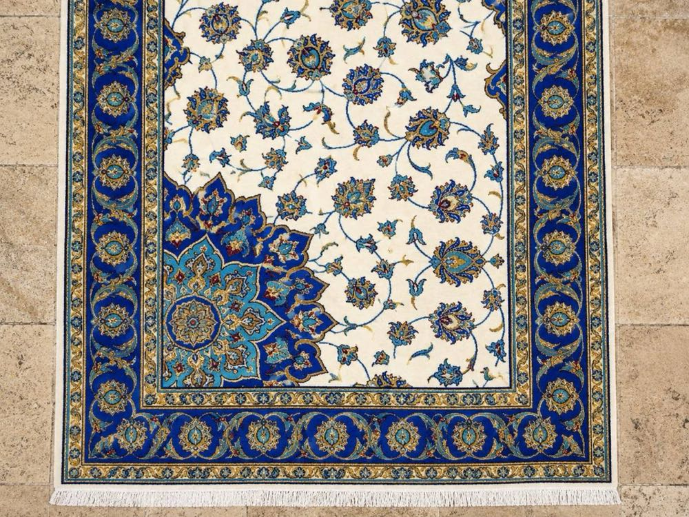
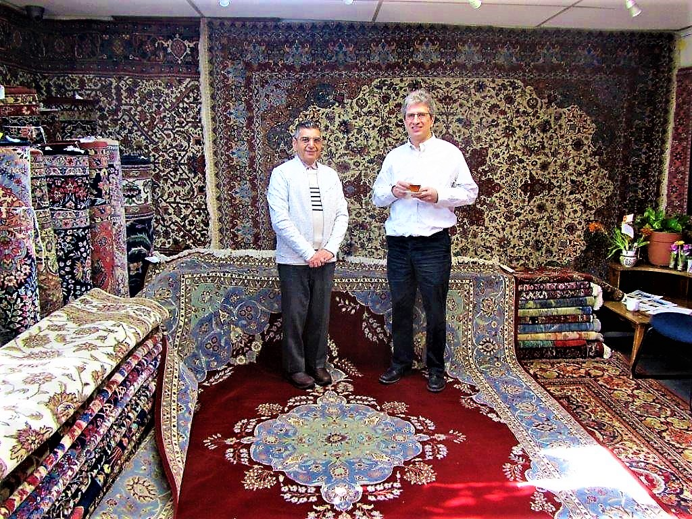
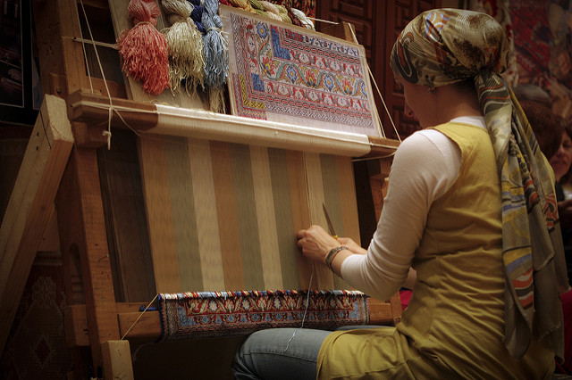
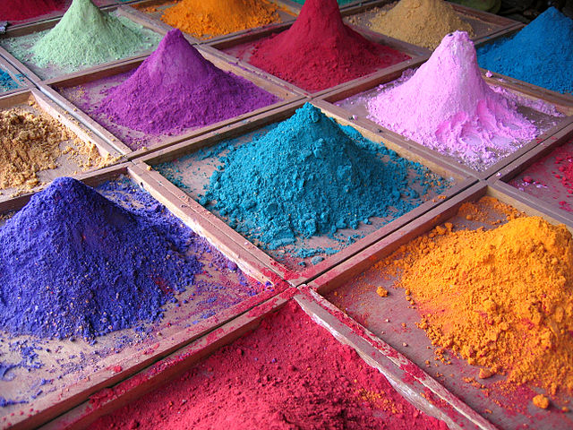
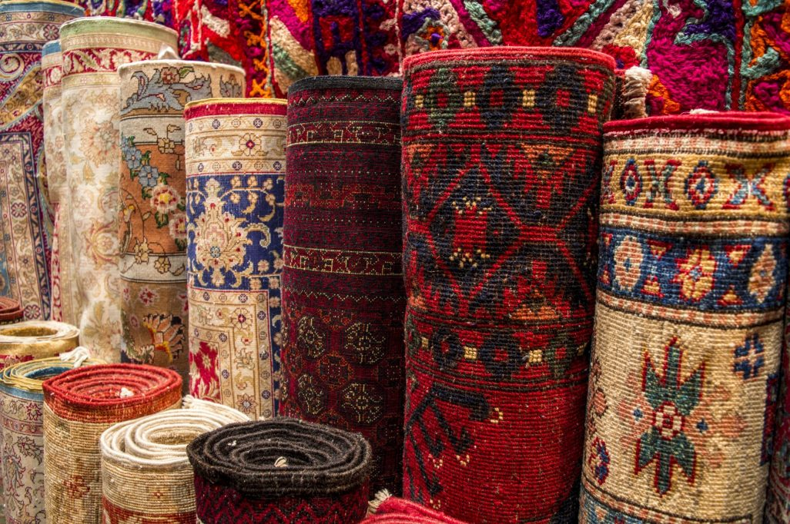
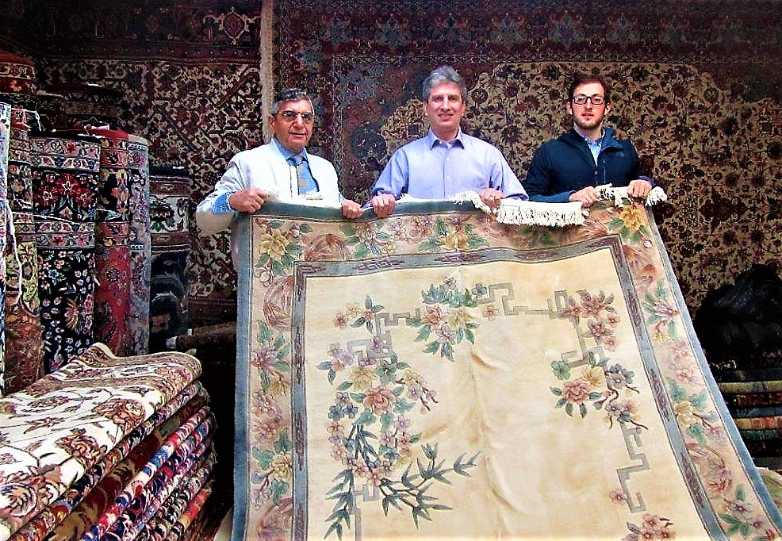
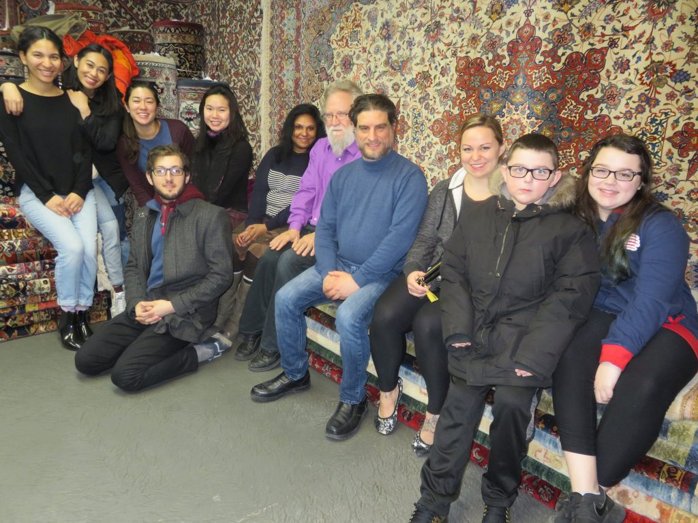
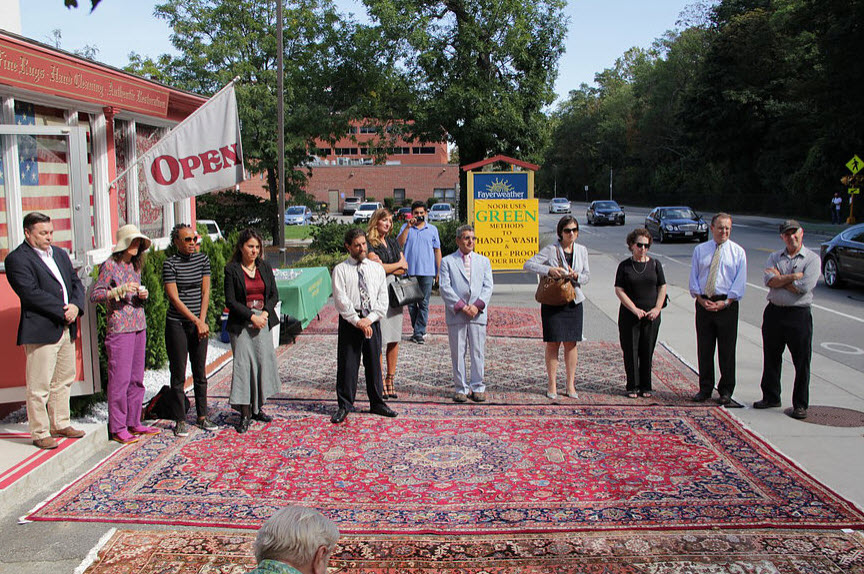

Preserving three centuries of weaving legacy. Explore Persian rug restoration before and after case studies, traditional dyes, regional classifications, and care techniques.

Persian rug cleaning before and after: what professional hand washing can reveal, how dyes are checked, how often to clean, and how to prepare your rug.
Read Article
Every part of a handmade rug tells a story: the wool and dyes reveal its origin, landscape and herds, while the design reflects a weaver's tradition and soul.
Read ArticleAn introduction to handmade Persian and Oriental rugs: how form, decoration and function come together, from nomadic floor coverings to Safavid court carpets.
Read Article
How Persian rugs are woven: city workshops with pre-drawn designs on vertical looms, and village and nomadic weavers working from memory on portable looms.
Read Article
Why natural dyes matter in Persian and Oriental rugs: master dyers use plants, minerals and insects to make light-fast colors that age gracefully for decades.
Read ArticleHow to tell an authentic handmade Oriental rug: handspun wool, organic vegetable dyes and traditional hand-knotting, versus machine-made rugs and synthetics.
Read Article
How Oriental rugs are classified by place of origin, weaving category, age and composition, and why it matters when you buy, insure or appraise a fine rug.
Read Article
Beautiful flaws in handmade rugs: why variations in color, pattern symmetry and knotting are signs of hand craftsmanship that add character and unique value.
Read ArticleWhy wool quality matters in Persian rugs: how geography and climate shape the fleece, and why lanolin-rich highland wool from the Zagros Mountains is prized.
Read Article
How to donate a rug to charity in Boston through Noor Oriental Rugs: 501(c)(3) charities, direct help for families, IRS Form 8283 and certified appraisals.
Read Article
Explore detailed answers about why donating unneeded rugs is a safer alternative to selling, how we handle appraisals, and what happens to your donation.
Read Article